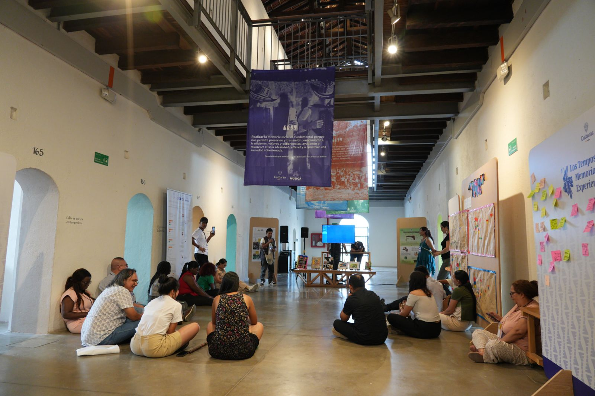
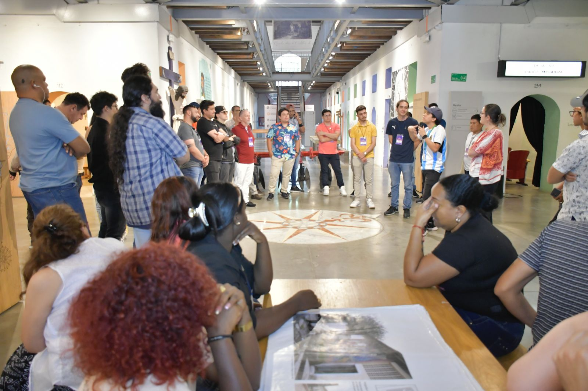
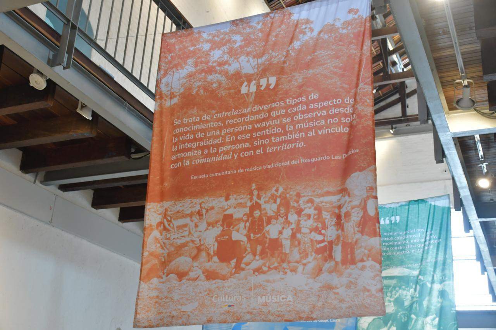
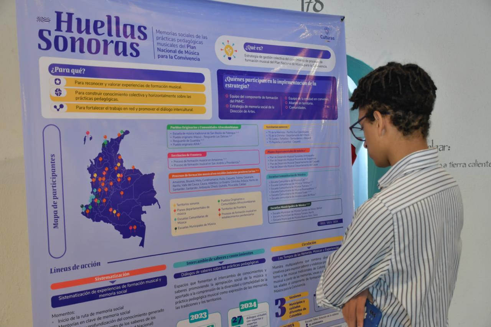
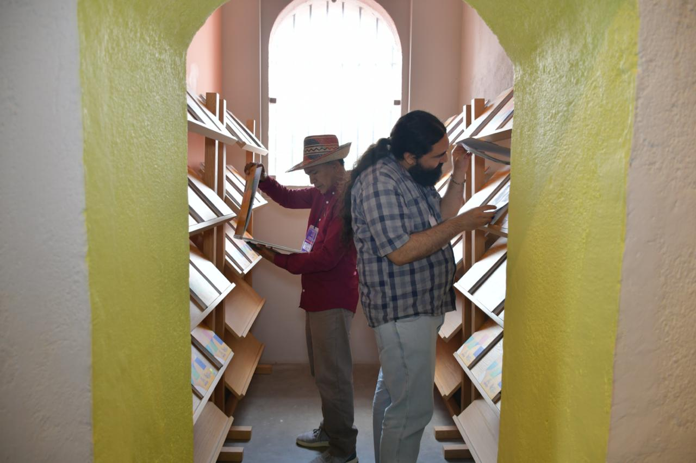
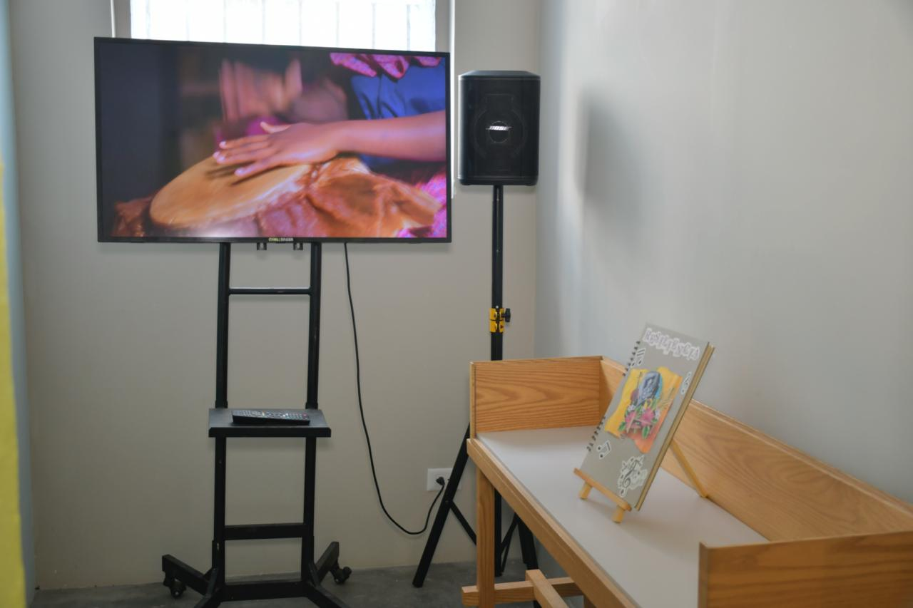
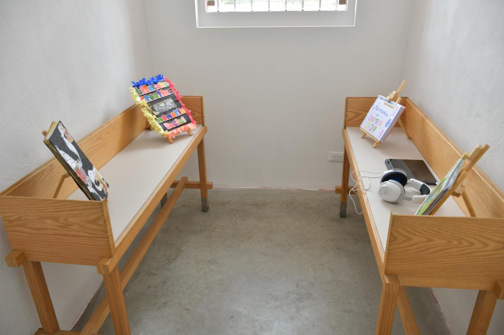

volver
los tempos de las memorias, músicas y experiencias - 2024
curador
museo panóptico de ibagué
tolima, colombia
2024
texto de sala:
Desde el 2022, Los tempos de las memorias, músicas y experiencias se ha convertido en un espacio de encuentro en el que caben todas las formas de vivir las músicas de colombia. Sin importar en dónde se realice, este encuentro siempre ha congregado en un mismo lugar los sonidos de los valles profundos que acunan los ríos, de las cimas andinas y sus vientos helados, de las costas y las selvas, de las llanuras y los desiertos.
En las dos versiones anteriores recorrimos los territorios y escuchamos sus relatos a través de las diversas memorias sociales que nos sirvieron como excusa para encontrarnos, reconocernos y escucharnos. Y aunque esta tercera edición es la continuación de ese viaje, también es la promesa de seguir construyendo nuestros horizontes compartidos. Porque hoy entendemos que reconocer nuestra historia colectiva, nuestras huellas que suenan, es vital para proyectar nuestro futuro.
Así que este encuentro que hoy nos reúne es una celebración. Celebramos que la educación musical sigue siendo la fuerza que nos moviliza. Celebramos que nuestras reflexiones son cada vez más profundas. Celebramos que nuestras acciones son cada vez más sensibles. Celebramos que cada vez somos más cuerpos y colectividades diversas que se encuentran, bailan, cantan, piensan y sienten las músicas del país.
También nos preparamos para los nuevos desafíos, comprometidos con la idea de que las músicas seguirán siendo las guías en nuestro andar hacia una sociedad más justa, equitativa y en paz. Una idea que afirmamos cada vez que ponemos la mirada sobre las memorias sociales que hacen parte del encuentro este año, y en las que cada territorio, cada comunidad, cada experiencia aporta una voz única y valiosa, cargada de conocimiento y de saber. Este año reafirmamos que la memoria es un entramado de voces que se escuchan, dialogan y se complementan.
No nos queda más que darles la bienvenida a esta tercera edición de Los tempos de las memorias, músicas y experiencias, un espacio que sigue creciendo y que con cada año se hace más profundo, y en el que todas las voces llenan el espacio, todos los ritmos resuenan, y todas las historias tejen el entramado colectivo que estamos construyendo.







fotos de instalación: ministerio de las culturas, las artes y los saberes de colombia